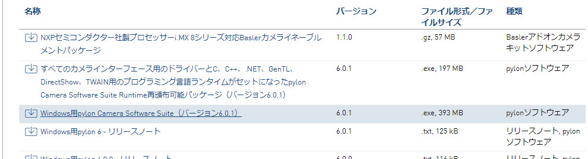

「pypylon」は、「Basler pylon Camera Software Suite」の公式pythonラッパーです。Basler社が手がけるカメラAPIのオープンソースプロジェクトです。
Basler社の産業用カメラを簡単に使える非常に便利なライブラリです。しかも、「BSD 3-Clause」（三条項BSDライセンス）とういう利用制限のあまりないライセンスです。
準備します
Windows10 64bitを対象とします。
こちらからWindows用「pylon Camera Software Suite」をダウンロードし、インストールします。

サンプルが必要な場合は、「Developer」のプロファイルでインストールしてください。
C:\Program Files\Basler\pylon *\Development\Samples
にありますので参考にしてください。
Pythonを準備します。
WinPythonやAnacondaなど、いろいろなモジュールが最初からそろっているPythonディストリビューションを利用すると便利です。
GitHubのpypylonの説明には、「せっかちなひとはwhlファイルをダウンロードしpipしてね」と書いてありますが、pypylonはPyPI（The Python Package Index）に登録されているので、下のようにDOSブロンプトでPIPを実行すればインストールできます。バージョンはPIPにお任せです。
python.exeのあるフォルダのパスを通しておくか、python.exeのあるフォルダで実行してください。
python.exe -m pip install pypylonOpenCVもインストールします。pypylonはopencv-pythonと相性が良いのです。
python.exe -m pip install opencv-pythonnumpyが入っていない場合は、それも入れておきましょう。
これで準備OKです。
確認しましょう
こちらに自作サンプル「camera_pylon.py」を作りました。ダウンロードし、Libフォルダに入れて以下を実行してみてください。
from camera_pylon import *
cam = CameraPylon()
cam.open()
cam.view()OpenCVのimshow()を使った簡易なビュアーが立ち上がります。[ESC]キーで終了します。cam.view(0)とすれば1ショットごとに一時停止します。
img = cam.grab()で画像を取り込みます。全ての画像はRGB画像に変換されます（画像データはBGR配列）。NumPyの配列ですのでOpenCVですぐに使うことができます。
help(CameraPylon)で使えるメソッドの一覧が見れます。
pypylonのサンプルをもとにして作りました。いろいろいじってみてください。